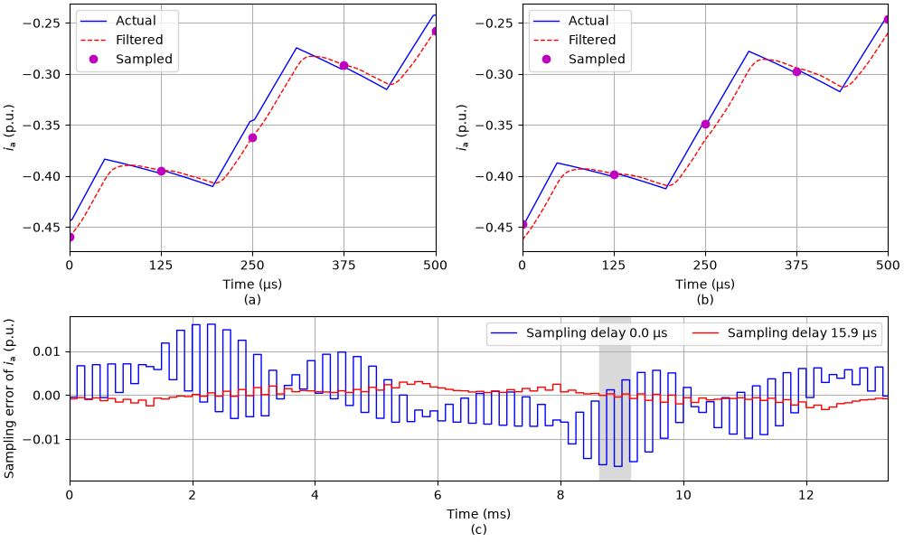

Note
Go to the end to download the full example code.
2.2-kW IPMSM, sampling delay, FVC#
This example shows how the sampling instant affects filtered current measurements in flux-vector control (FVC) of a 2.2-kW interior permanent-magnet synchronous machine (IPMSM) drive. The converter is modeled by carrier comparison, so the switching ripple of the currents is included. The current sensors have a first-order low-pass characteristic, which models the sensors and the anti-aliasing filters. The drive operates at the nominal torque and speed.
from math import pi
import matplotlib.pyplot as plt
import numpy as np
import motulator.drive.control.sm as control
from motulator.common.utils import complex2abc, set_style
from motulator.drive import model, utils
Compute base values based on the nominal values.
nom = utils.NominalValues(U=370, I=4.3, f=75, P=2.2e3, tau=14)
base = utils.BaseValues.from_nominal(nom, n_p=3)
The currents are sampled twice per carrier period. At the carrier extrema, the actual current is close to its average over the sampling period, so sampling at the extrema removes most of the switching ripple from the feedback. The current sensors with the bandwidth alpha delay the measured current by about the time constant 1/alpha and distort the sampled ripple. The sampling instants can be delayed from the carrier extrema by sampling_delay of the modulator, while the duty ratios are still loaded at the extrema. The drive is simulated without and with the sampling delay equal to the time constant of the sensors. The rotor speed is constant, and the measured rotor angle is used, so that the results depend only on the current measurement.
par = model.SynchronousMachinePars(n_p=3, R_s=3.6, L_d=0.036, L_q=0.051, psi_f=0.545)
alpha = 2 * pi * 10e3 # Bandwidth of the current sensors
DELAYS = [0.0, 1 / alpha]
def simulate(sampling_delay):
"""Simulate the drive at the nominal torque and speed."""
modulator = model.CarrierComparison(sampling_delay=sampling_delay)
sensors = model.DriveSensors(i_c=model.Sensor(alpha=alpha), theta_M=model.Sensor())
mdl = model.Drive(
model.SynchronousMachine(par),
model.ExternalRotorSpeed(),
model.VoltageSourceConverter(u_dc=540, modulator=modulator),
sensors=sensors,
)
mdl.mechanics.set_external_rotor_speed(base.w_M)
cfg = control.FluxVectorControllerCfg(i_s_max=1.5 * base.i, sensorless=False)
ctrl = control.VectorControlSystem(control.FluxVectorController(par, cfg))
ctrl.set_torque_ref(nom.tau)
return model.Simulation(mdl, ctrl).simulate(t_stop=0.07, N_eval=20)
results = [simulate(delay) for delay in DELAYS]
Compare the sampled currents with the actual currents at the carrier extrema, which precede the sampling instants by the sampling delay. Print the RMS value of the sampling error in the steady state.
T_SETTLE = 0.05
def sampled_current(res):
"""Return the sampled current in stationary coordinates."""
return np.exp(1j * res.ctrl.fbk.theta_c) * res.ctrl.fbk.i_s
def sampling_error(res, delay):
"""Compute the sampled current minus the actual current at the carrier extrema."""
i_s_ab = np.interp(res.ctrl.t - delay, res.mdl.t, res.mdl.machine.i_s_ab)
return sampled_current(res) - i_s_ab
errors = [sampling_error(res, d) for res, d in zip(results, DELAYS, strict=True)]
for delay, res, err in zip(DELAYS, results, errors, strict=True):
rms = np.sqrt(np.mean(np.abs(err[res.ctrl.t > T_SETTLE]) ** 2) / 2) / base.i
print(f"Sampling delay {1e6 * delay:.1f} µs: RMS sampling error {rms:.4f} p.u.")
Sampling delay 0.0 µs: RMS sampling error 0.0068 p.u.
Sampling delay 15.9 µs: RMS sampling error 0.0013 p.u.
Plot the sampling error of phase a over one fundamental period (c). Plot also the current of phase a over four sampling periods around the largest sampling error (a) without and (b) with the sampling delay, shaded in (c). In (a) and (b), the time is measured from a carrier extremum, and the ticks are at the carrier extrema. The samples are plotted at the carrier extrema, whose currents they should represent.
T_s = results[0].ctrl.ref.T_s[0] # Sampling period
T_1 = 2 * pi / (par.n_p * base.w_M) # Fundamental period
N_ZOOM = 4 # Number of sampling periods in the window
t = results[0].ctrl.t
k = np.argmax(np.abs(errors[0].real) * (t > T_SETTLE) * (t < T_SETTLE + T_1))
n = np.arange(k - N_ZOOM // 2, k + N_ZOOM // 2 + 1) # Samples in the window
set_style()
fig, axes = plt.subplot_mosaic(
[["a", "b"], ["c", "c"]], figsize=(10, 6), height_ratios=[3, 2]
)
axes["b"].sharey(axes["a"])
for key, delay, res in zip("ab", DELAYS, results, strict=True):
ax = axes[key]
t_k = res.ctrl.t[n] - delay # Carrier extrema
t_0 = t_k[0]
m = (res.mdl.t >= t_0) & (res.mdl.t <= t_k[-1])
t = 1e6 * (res.mdl.t[m] - t_0)
ax.plot(t, complex2abc(res.mdl.machine.i_s_ab[m])[0] / base.i, label="Actual")
i_a = complex2abc(res.mdl.i_c_sensor.y[m])[0] / base.i
ax.plot(t, i_a, "--", label="Filtered")
i_a = complex2abc(sampled_current(res)[n])[0] / base.i
ax.plot(1e6 * (t_k - t_0), i_a, "o", label="Sampled")
ax.set_xticks(1e6 * T_s * np.arange(N_ZOOM + 1))
ax.set_xlim(0, 1e6 * N_ZOOM * T_s)
ax.set_xlabel(f"Time (µs)\n({key})")
ax.set_ylabel(r"$i_\mathrm{a}$ (p.u.)")
ax.legend()
axes["b"].tick_params(labelleft=True)
for delay, res, err in zip(DELAYS, results, errors, strict=True):
label = f"Sampling delay {1e6 * delay:.1f} µs"
t_k = 1e3 * (res.ctrl.t - T_SETTLE)
axes["c"].plot(t_k, err.real / base.i, ds="steps-post", label=label)
t_k = 1e3 * (results[0].ctrl.t[n] - T_SETTLE)
axes["c"].axvspan(t_k[0], t_k[-1], color="0.85")
axes["c"].set_xlim(0, 1e3 * T_1)
axes["c"].set_xlabel("Time (ms)\n(c)")
axes["c"].set_ylabel(r"Sampling error of $i_\mathrm{a}$ (p.u.)")
axes["c"].legend(loc="upper right", ncols=2)
plt.show()

Without the sampling delay, the samples follow the filtered current, which lags the actual current. The sampling error also alternates between consecutive samples, since the filter distorts the switching ripple. With the sampling delay, the samples agree much better with the actual currents at the carrier extrema. In a real control system, the sampling delay shortens the time available for computing the duty ratios, since they are still loaded at the following carrier extremum.
Total running time of the script: (0 minutes 2.560 seconds)